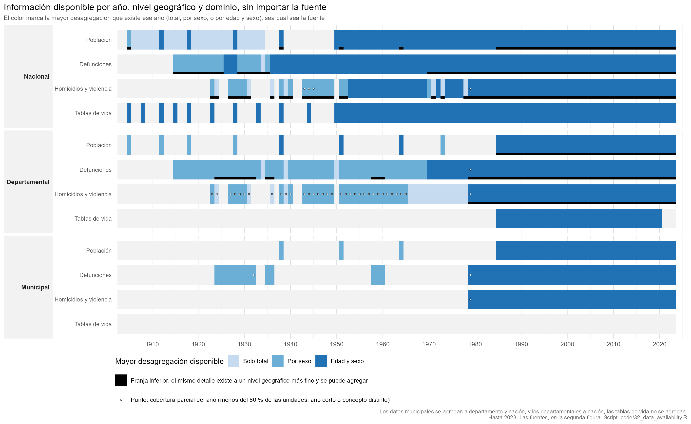
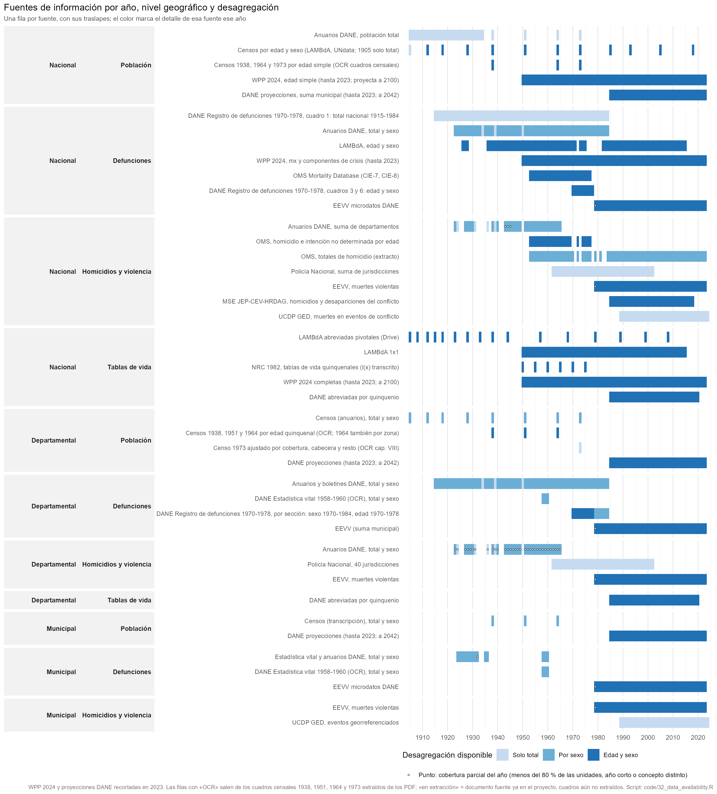
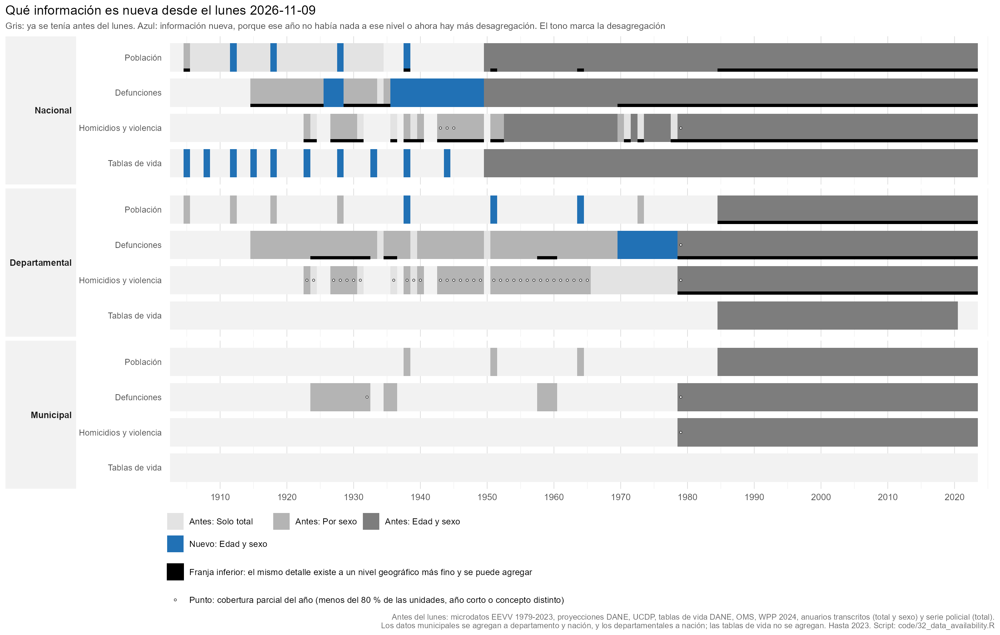
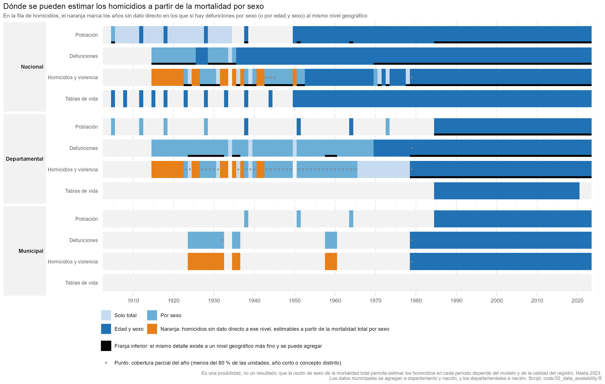

Estado al 2026-11-11 (versión anterior: 2026-11-10). Rutas relativas
a la raíz del proyecto
(C:\Users\kikep\gits\colombia_homicidios).
data_input/ contiene insumos originales o transcritos;
data_inter/ productos intermedios de los scripts;
output/tables/ las series finales.
El inventario existe también como datos: el registro de fuentes y el
catálogo de archivos de documents/inventory/, que
code/32b_data_catalog.R cruza con el disco (tamaño, fecha,
sha256, si está en git) y escribe en
output/tables/data_catalog.csv y
data_catalog_files.csv. La sección 8 lo describe, junto con
los documentos fuente.
Estado del 2026-11-11 a las 22:45. Si un archivo está o no en git lo
dice la columna en_git de
output/tables/data_catalog_files.csv; aquí no se repite
porque cambia con cada commit.
| Qué entra | Archivos | Estado |
|---|---|---|
| Censo de 1964, resumen general: edad quinquenal por sexo y zona para 27 unidades (cuadro 7) y edad simple nacional por sexo y zona (cuadro 9) | data_input/historical/LD_771_1964.pdf;
census_tables/census1964_dept_age5_sex_zone.csv,
census1964_single_age_sex_zone.csv |
extraído y validado (hist/23) |
| DANE, Registro de defunciones en Colombia, 1970-1978 (1987, 472 páginas): defunciones por edad y sexo, nacional y por sección del país, 1970-1978; 150 causas por edad y sexo, nacional, 1973-1978; menores de cinco años por sección; total nacional 1915-1984 | data_input/historical/LD_8789_1970_1978_EJ_3.pdf;
dane_defunciones_1970_1978_cuadro01 … cuadro11*.csv (seis
tablas: 1, 2, 3, 6, 10 y 11) |
extraído y verificado por identidades
(code/historical/25_dane_defunciones_1970_1978.R) |
| Hijos nacidos vivos y sobrevivientes, censo de 1973 (cuadros 21 y 21A) | census_tables/census1973_children_ever_born_age.csv,
…_units.csv |
versionado; lo usa el script 43 |
| UN IGME 2024: mortalidad infantil, de 1 a 4 y de menores de cinco años por sexo, 1950-2024, con los puntos de cada fuente | data_input/reference/unigme2024_colombia_sdmx.csv |
scripts 41-43 |
| Tablas de vida del National Research Council (1982), 1950-1975 cada cinco años, por sexo | data_input/reference/nrc1982_colombia_lifetables.csv |
script 44 |
| OMS, grupos de causa por edad y sexo (externas, violentas, mal definidas), 1953-1977 | data_input/reference/who_causes_age_colombia_1953-1977.csv |
script 40 |
| Coeficientes de Trussell y tablas modelo Coale-Demeny para el método de Brass | data_input/reference/trussell_child_mortality_coefficients.csv,
coale_demeny_child_q_by_level.csv |
script 43 |
| WPP 2024, población al 1 de enero por edad simple y sexo, 1950-2024 | data_input/reference/wpp2024_colombia_pop_1jan_single_age_1950-2024.csv |
versionado; scripts 37-39 |
| Productos de los scripts 34 a 44: contraste con WPP, completitud comparada, reconstrucción poblacional, componentes de la mortalidad, mortalidad en la niñez (sección 5) | output/tables/ |
scripts 34 a 44 |
Carpeta data_input/dane_pdfs/: 41 PDF
de la biblioteca digital del DANE (833 MB). Anuarios de 1915 a 1931 y de
1968-1969, once boletines mensuales de 1977 a 2005, Nacimientos
registrados 1973-1984, estimaciones departamentales de mortalidad
infantil 1981-1993, mortalidad materna 1992-1996, la muestra de avance
del censo de 1973, Estudios postcensales 7 y 8 y el estudio CIMED-ERED
1971-1974, entre otros |
data_input/dane_pdfs/*.pdf |
catalogados con su dirección de origen; sin extraer. Ocho son
documentos que citaban las transcripciones; tres duplican PDF de
historical/ |
| Registro de fuentes, catálogo de archivos y lista de documentos fuente con su dirección de origen (sección 8) | documents/inventory/,
output/tables/data_catalog*.csv |
nuevo en esta versión |
Son dos figuras. La primera dice qué información existe cada año, sin importar quién la produjo; la segunda, de qué fuentes sale y cómo se traslapan.

Una fila por nivel geográfico (nacional, departamental, municipal) y dominio (población, defunciones, homicidios y violencia, tablas de vida). El color es la mayor desagregación que existe ese año, de cualquier fuente: solo total, por sexo, o edad y sexo, de modo que cambia con la estratificación de los datos y no con la fuente. La causa de muerte no es un estrato de la figura: la que interesa es la violenta, y tiene su propia fila. Tampoco figura la mortalidad en la niñez (sección 2.4). Una fila en gris es un hueco: no hay nada a ese nivel.
Un nivel más fino cuenta para los superiores: los datos municipales se agregan a departamento y a nación, y los departamentales a nación (las tablas de vida no se agregan). Si la información de un año está disponible a un nivel, se colorea, venga de donde venga; no importa si el nivel superior la tiene publicada o sale de sumar el inferior. Hay dos marcas:
Si una fuente en curso de extracción mejorara la información, se dibujaría un contorno naranja; hoy no hay ninguna. Las series proyectadas (WPP 2024, a 2100; DANE, a 2042) se recortan en 2023.
Una precisión sobre las defunciones nacionales de 1915-1922: el total nacional lo publica DANE (cuadro 1 del Registro de defunciones 1970-1978, 1915-1984, solo total) y ya está extraído; el sexo de esos años solo se obtiene sumando la serie departamental (94 % de las unidades con dato). Esa suma coincide con el total publicado en 1915-1919 y lo supera en un 5 % en 1920-1922 (4.243, 5.143 y 5.173 defunciones de más).

Una fila por fuente, agrupadas por nivel y dominio, de modo que se
ven los traslapes entre fuentes con distinto detalle. El color es el
detalle de esa fuente ese año y el punto marca la cobertura parcial,
como arriba. Las filas marcadas “OCR” son los cuadros de los censos
1938, 1951, 1964 y 1973 extraídos de los PDF (edad simple nacional 1938,
1964 y 1973; edad quinquenal por departamento 1938, 1951 y 1964;
población ajustada por cobertura 1973 por departamento), en
data_input/historical/census_tables/. Esta figura no
incluye las fuentes de causa de muerte (LAMBdA por 19 causas) ni las de
mortalidad en la niñez, que están catalogadas en
documents/inventory/archivos.csv.

La misma figura 0.1, con gris para lo que ya se tenía antes del lunes
y azul para lo nuevo: un año de un nivel y dominio es nuevo si antes no
había nada a ese nivel o si ahora hay más desagregación. Antes del lunes
se tenían los microdatos EEVV 1979-2023, las proyecciones DANE, UCDP,
las tablas de vida DANE, la Base de Mortalidad de la OMS (defunciones y
homicidios por edad y sexo, 1953-1977), WPP 2024 (en la carpeta
compartida desde agosto de 2024), las transcripciones de los anuarios
(col_gap_analysis_*) y la serie de la Policía. Estos dos
últimos grupos están en la carpeta compartida desde antes y se
verificaron contra los archivos: los col_gap_analysis_*
traen solo total, hombres y mujeres (sin edad) y el libro de la Policía
es una sola hoja de totales anuales por jurisdicción; las EEVV empiezan
en 1979. Por eso no cuentan como nuevos ni las defunciones
departamentales de 1915-1922, ni los homicidios departamentales de
1966-1978, ni la población departamental de 1905-1928 y 1973, ni las
defunciones municipales de 1924, ni el total nacional de 1915-1922 que
publica el Registro de defunciones (con sexo ya existía sumando
los departamentos).
Lo nuevo es información con edad que antes no había, y aparece en 43 de las 818 combinaciones de nivel, dominio y año con información:
| Nivel | Dominio | Años nuevos | Qué llegó |
|---|---|---|---|
| Nacional | Población | 4 (1912, 1918, 1928, 1938) | edad y sexo de los censos (LAMBdA) |
| Nacional | Defunciones | 17 (1926-1928 y 1936-1949) | edad y sexo (LAMBdA) |
| Nacional | Tablas de vida | 10 (1905-1944, años pivotales) | tablas abreviadas de LAMBdA |
| Departamental | Defunciones | 9 (1970-1978) | edad y sexo por sección del país (Registro de defunciones, cuadros 10 y 11) |
| Departamental | Población | 3 (1938, 1951, 1964) | edad quinquenal por departamento (tablas censales extraídas de los PDF) |
Nada es nuevo a nivel municipal, ni en los homicidios (la OMS ya daba la edad y el sexo de 1953 a 1977). Las defunciones nacionales por edad y sexo de 1953 a 1977 ya estaban en la OMS, y WPP 2024 ya cubría 1950-2023, de modo que ninguna de las dos cuenta. LAMBdA sí cuenta como nueva. Es una comparación por fuente: marca si la información existe y con qué detalle, no distingue correcciones dentro de una transcripción.

La misma figura 0.1, con naranja en la fila de homicidios en los años sin dato directo a ese nivel en los que sí hay defunciones por sexo (o por edad y sexo) al mismo nivel geográfico, que es lo que necesita estimar los homicidios a partir de la razón de sexo de la mortalidad total. Son años en que hoy no hay ninguna fuente de homicidios:
Es una posibilidad, no un resultado: que la razón de sexo permita
estimar los homicidios en cada periodo depende del modelo y de la
calidad del registro, y no se ha validado aquí. No incluye los años en
que hay homicidios con cobertura parcial (los puntos de la figura), que
también podrían completarse. La retroproyección departamental de
homicidios 1915-2019 en curso en la rama
claude/homicide-mortality-modeling-c3a2c6 trabaja sobre
este mismo problema.
Las cuatro figuras las produce
code/32_data_availability.R. La tabla de la segunda, con
una fila por serie y año, el detalle, la bandera de parcialidad, la
proporción de unidades con dato, el estado (disponible o en extracción)
y el archivo de origen, es
output/tables/data_availability.csv. La de la primera, con
una fila por nivel, dominio y año, el detalle, el detalle antes del
lunes, si es nuevo desde el lunes, si los homicidios son estimables
(naranja de 0.4), si es parcial, si el dato viene de sumar un nivel más
fino (agregado) y si el mismo detalle existe a un nivel más
fino (agregable), y la fuente que da ese detalle, es
output/tables/data_availability_information.csv. Para las
series transcritas (anuarios) los años y la cobertura se calculan de los
csv; las demás se declaran con su rango conocido.
Lo que la figura muestra de un vistazo:
| Nivel | Defunciones todas las causas | Homicidios / muertes violentas | Población | Tablas de vida y mortalidad en la niñez |
|---|---|---|---|---|
| Nacional | Total 1915-1984 (cuadro 1 del Registro de defunciones); totales por sexo 1923-1984 (anuarios DANE); por edad y sexo 1926-2015 (LAMBdA), 1953-1977 con causa (OMS), 1979-2023 (EEVV microdatos); por edad y sexo 1970-1978 y con 150 causas 1973-1978 (Registro de defunciones, cuadros 3 y 6); WPP 2024 1950-2100 por edad simple, con componente de crisis separado | 1923-1965 (anuarios); 1953-1977 por edad (OMS A148/A149); 1962-2002 (Policía, suma de deptos); 1979-2023 por edad (EEVV); MSE JEP-CEV-HRDAG 1985-2018 por edad quinquenal; UCDP GED 1989-2024 | Censos 1905-2018; edad simple × sexo en los censos 1938, 1964 y 1973
(census_tables); anuarios 1905-1985; WPP 1950-2100
(población a mitad de año y al 1 de enero, fecundidad por edad simple);
DANE 1985-2042 |
LAMBdA 1x1 1950-2015 y abreviadas pivotales 1905-2008 (en Drive); NRC 1982, 1950-1975 cada cinco años; WPP 2024 completas 1950-2100; DANE 1985-2020. Niñez: UN IGME 1950-2024 por sexo; hijos nacidos vivos y sobrevivientes por edad de la madre y zona, censo 1973 |
| Departamental | Totales (y sexo cuando existe) 1915-1984 en tres particiones territoriales (v06); versión previa v01 1923-1984; por sexo 1970-1984 y por edad y sexo 1970-1978, con menores de cinco años (Registro de defunciones, cuadros 2, 10 y 11); 1979-2023 agregables desde EEVV municipal | 1923-1965 (anuarios, v02, 27 deptos); 1962-2002 Policía Nacional (40 jurisdicciones); 1979-2023 EEVV | Censos 1905, 1912, 1918, 1928, 1938, 1951, 1964, 1973 (v03); edad
quinquenal × sexo en 1938, 1951 y 1964 (este también por zona) y
población ajustada por cobertura 1973 (census_tables); DANE
1985-2042 |
DANE abreviadas departamentales 1985-2020. Niñez: hijos nacidos vivos y sobrevivientes por zona, sin edad de la madre, censo 1973 |
| Municipal | Totales por sexo en 14 años: 1924-1932, 1935-1936, 1958-1960 (v03,
850 municipios); 1958-1960 verificados contra los totales
departamentales, con bautizos y defunciones de menores de un año por
sexo (dane_vitales_1958_1960, 828-872 unidades); versión
previa v01 1925-1960 (13 años); 1979-2023 por edad, sexo y causa
(EEVV) |
1979-2023 EEVV (dx_v); estimaciones ajustadas 1985-2017
(data_inter) |
Censos 1938, 1951, 1964 (v03, 881 municipios); DANE 1985-2042 por sexo y edad | ninguna (tasas por municipio 1985-2017 en
data_inter) |
Huecos principales:
census_tables); 1973 no (su resumen solo trae
edad a nivel nacional).| Archivo | Años | Detalle | Fuente | Notas | Scripts |
|---|---|---|---|---|---|
data_input/historical/col_gap_analysis_1920_1985_national_deaths_clean_v03.csv |
1923-1984 (62 años con dato, 59 con sexo) | total, hombres, mujeres | Anuarios estadísticos DANE, suma de departamentos | Separador ;. 1950 sin sexo. La caída de 1965 (178.372)
a 1970 (134.895) es subregistro y cobertura, no mortalidad |
hist/21; 22 (total del anuario) |
data_input/historical/lambda_Col_Deathsm.txt,
lambda_Col_Deathsf.txt |
1926-2015, 76 años (saltos antes de 1936, 1973 y 1982) | grupos de edad LAMBdA × sexo | LAMBdA (Palloni et al.), defunciones registradas | Coinciden con los anuarios año a año. Usadas para 1938-1952, 1971 y 1973 | 21, 22, 23, 25, 28 |
data_input/historical/lambda_Col_Cause19_Deathsm.txt,
…Deathsf.txt |
1953-2009 (50 años) | 19 grupos de causa × edad × sexo, CIE-7 a CIE-10 | LAMBdA | Incluye causas externas; no explotado todavía | ninguno |
data_input/who_mdb/morticd07.zip,
morticd08.zip (+ mort_pop.zip,
mort_availability.zip,
mort_documentation.zip) |
Colombia 1953-1977 | lista A (CIE-7/8) × edad × sexo | WHO Mortality Database | Sin causas en 1970, 1971, 1973. Extractos en
data_input/reference/who_deaths_age_colombia_1953-1977.csv
y data_inter/who_deaths_age_1953-1977.rds |
21 |
data_input/reference/who_causes_age_colombia_1953-1977.csv |
1953-1977 (sin 1971 ni 1973) | 16 grupos de causa de la lista A (todas, externas A138-A150, mal definidas A136-A137) × edad × sexo; 1970 en lista B (6 grupos) | WHO Mortality Database, extracto del script 40 | Reparte las defunciones registradas en natural, otras externas y violenta. | 40 (produce) |
data_input/historical/LD_8789_1970_1978_EJ_3.pdf (22
MB, no versionado) |
1970-1978; totales 1915-1984 | cuadro 1: total nacional 1915-1984; cuadro 3: zona × sexo × edad, 1970-1978; cuadro 6: edad × sexo × 150 causas de la lista A, 1973-1978; sin extraer: cuadros 4 (estado civil) y 5 (certificación médica) | DANE (1987), Registro de defunciones en Colombia, 1970-1978 | Extraído a
data_input/historical/dane_defunciones_1970_1978_cuadro01_nacional_1915_1984.csv,
…cuadro03_nacional_zona_edad.csv y
…cuadro06_causas_edad_1973_1978.csv; las celdas se ataron
por identidades contables y quedan 112 inconsistencias del impreso,
listadas en dane_defunciones_1970_1978_support/. Es además
la fuente citada de las defunciones departamentales 1970-1984 de la
v06. |
hist/25 (produce) |
data_input/micro/Defun1979.txt …
Defun2023.txt (45 archivos) |
1979-2023 | microdatos: municipio, sexo, edad, causa | DANE EEVV | 1978 no existe; 1979 corto (110.400 vs 125.925 del anuario).
Diccionarios en documents/metadata/ |
01, 02 → data_inter/micro_1979_2023.rds,
deaths_munic_1979-2023.rds,
deaths_munic_age_1979-2023.rds |
data_input/reference/wpp2024_colombia_mx_pop_single_age_1950_2100.rds |
1950-2100 | mx y población, edad simple × sexo | UN WPP 2024 | Referencia de nivel adoptada (script 27) | 22-30 |
data_input/251208_MortalityCrises.zip (803 MB, no
público) →
data_input/reference/wpp2024_crises_colombia_{mx1_conflicts, mx1_crises, mx1_disasters, mx1_famine, mx1_covid, lt1_crises_free, events, country, cdr}.csv |
1950-2023 | mx por edad simple y sexo, por tipo de crisis | UN Population Division, insumos de WPP 2024 | mx_total = mx_crises_free + mx_crises. Conflicto en Colombia ~53 k muertes 1985-2018 (UCDP/PRIO/PITF) y La Violencia 12 k/año 1950-56 (Valentino 2004) | 26 (extrae), 27 |
data_inter/deaths_age_annual_1938-2023.rds |
1938-2023 | edad quinquenal × sexo | Ensamble LAMBdA (1938-52, 1971, 1973) + OMS + EEVV | Serie registrada de insumo al DDM y a la completitud | 22 → 23, 25, 27, 28 |
| Archivo | Años | Detalle | Fuente | Notas | Scripts |
|---|---|---|---|---|---|
data_input/historical/archive_v01_v02/homicides_national_v02.csv |
1923-1965 | total, hombres, mujeres, nº de deptos con dato | Anuarios DANE (suma departamental) | 1943-1945 usan el concepto “muertes violentas accidentales”, no homicidio puro | ninguno (archivado; sustituido por col_gap_analysis) |
data_input/reference/who_violent_age_colombia_1953-1977.csv,
data_inter/who_violent_age_1953-1977.rds |
1953-1977 (sin 1970, 1971, 1973) | homicidio e intención no determinada × edad × sexo | WHO MDB (A149 en CIE-7; A148 + A149 en CIE-8) | Edad desconocida redistribuida | 21 → 30 |
data_inter/who_homicide_colombia.rds,
who_all_cause_colombia.rds |
1953-2023 (65 años con dato) | totales anuales | WHO MDB, extracto sin script productor | Convertir a csv bajo data_input/reference/who/ antes de
publicar |
hist/20, hist/22 |
data_input/conflict/mse_national_age5_1985-2018.rds,
data_inter/conflict_mse_age5_1985-2018.rds |
1985-2018 (desapariciones hasta 2016) | homicidios y desapariciones del conflicto, edad quinquenal 0-4 … 95+, sexo | JEP-CEV-HRDAG, estimación por sistemas múltiples | 617 k homicidios, 127 k desapariciones. La edad desconocida está volcada en 0-4 y en 85-89 (hasta 1988), 90-94 (1989-93) y 95+ (1994-2000); se trata como desconocida y se redistribuye en 5-84 | 21, 23, 27 |
data_input/ucdp/GEDEvent_v25_1.csv,
GEDEvent_v25_01_25_12.csv (270 MB, no versionado) |
1989-2024 | eventos georreferenciados con muertes estimadas | UCDP GED v25.1 | Solo comparación | hist/22 |
data_input/historical/Homicidio 1962-2002 por depto de Policía_v1.xlsx
(hoja Tabla_ancha) |
1962-2002 | 40 jurisdicciones policiales × año | Policía Nacional | Suma nacional derivable; concepto policial distinto del médico-legal | ninguno aún |
| Archivo | Años | Detalle | Fuente | Scripts |
|---|---|---|---|---|
data_input/historical/col_gap_analysis_1920_1985_national_population_clean_v02.csv |
1905-1985 (34 años con dato) | total | Anuarios DANE y censos | hist/21 |
data_input/historical/lambda_Col_Popm.txt,
lambda_Col_Popf.txt |
censos 1912, 1918, 1928, 1938, 1951, 1964, 1973, 1985, 1993, 2005 | edad × sexo | LAMBdA | 21, 22 |
data_input/census_raw/undata_t22,
undata_t44;
data_input/reference/undata_census_colombia.csv,
undata_foreign_born_colombia.csv |
censos 1951-2018 | edad × sexo, población enumerada | UNdata (Demographic Yearbook) | 21 → data_inter/census_pop_age.rds → 22-24 |
data_input/reference/wpp2024_colombia_mx_pop_single_age_1950_2100.rds |
1950-2100 | edad simple × sexo | WPP 2024 | 22-30 |
data_input/reference/wpp2024_colombia_pop_single_age_1950-2023.csv,
wpp2024_colombia_fertility_age1.csv,
wpp2024_colombia_lt_complete_1950-2100.csv |
1950-2023 (población), 1950-2100 (fecundidad, tablas de vida) | edad simple × sexo; ASFR por edad simple; tablas de vida completas | WPP 2024 (csv completos en Drive,
gits_drive/wpp_2024) |
31 (produce); 33-44 |
data_input/reference/wpp2024_colombia_pop_1jan_single_age_1950-2024.csv |
1950-2024 | población al 1 de enero, edad simple × sexo | WPP 2024 | 37 (produce); 38, 39 |
data_input/historical/census_tables/census1938_single_age_sex.csv,
census1973_single_age_sex.csv |
censos 1938 y 1973 | edad simple (0-98, 99+) × sexo; 1938 con fila indígena; 1973 población censada sin ajuste | DANE, resúmenes censales (OCR / transcripción validada, hist/23) | hist/23 (produce); sin uso aún |
data_input/historical/census_tables/census1964_single_age_sex_zone.csv |
censo 1964 | edad simple (0-98, 99+) × sexo × zona (total, cabecera, resto); población censada 17.484.508 | DANE, resumen general de 1964, cuadro 9 (OCR validado, hist/23). | hist/23 (produce); sin uso aún |
data_input/migration/undesa_pd_2020_ims_stock_by_age_sex_and_destination.xlsx,
undesa_pd_2024_ims_stock_by_sex_destination_and_origin.xlsx |
1990-2024 | stock de emigrantes colombianos por edad y sexo | UN DESA | 21 → data_inter/emigrant_stock_age_1990-2024.rds → 22,
23 |
| Archivo | Años | Detalle | Fuente | Notas | Scripts |
|---|---|---|---|---|---|
data_input/reference/unigme2024_colombia_sdmx.csv |
1950-2024 | tasa de mortalidad infantil y de menores de cinco años desde 1950,
de 1 a 4 desde 1954, neonatal desde 1953; total y por sexo; 713
estimaciones (serie UN_IGME) y 1.008 puntos de fuente:
registro (520), DHS (323), censos (80), WFS (51), otras (34) |
UN IGME, ronda 2024; API SDMX de UNICEF, descarga del 2026-11-11 | Bloque de menores de cinco años de la serie ajustada (script 42). Trae también la serie indirecta del censo de 1973, que sirve de cotejo al script 43. | 41, 42, 43 |
data_input/historical/census_tables/census1973_children_ever_born_age.csv |
censo 1973 | mujeres de 15 años y más por hijos nacidos vivos y sobrevivientes, por edad quinquenal (15-19 … 45-49, 50+) y zona; incluye las que no informan y las sin hijos | DANE, resumen nacional de 1973, cuadro 21 (transcripción validada, hist/23) | 18,5 % no informa el número de hijos (40 % a los 15-19): corrección de El-Badry. Da el 5q0 hacia 1959-1972 por Brass-Trussell, nacional y por zona | hist/23 (produce); 43 |
data_input/reference/trussell_child_mortality_coefficients.csv,
coale_demeny_child_q_by_level.csv |
coeficientes de k(i) y t(i) (Manual X, tablas 47 y 48) y q(1) … q(20) por nivel de las tablas modelo Coale-Demeny, cuatro familias | paquete R u5mr 0.1.1 (archivado en CRAN) |
43 |
| Archivo | Años | Detalle | Fuente | Scripts |
|---|---|---|---|---|
data_input/reference/nrc1982_colombia_lifetables.csv |
1950, 1955, 1960, 1965, 1970, 1975 | l(x) por sexo en las edades 0, 1, 2, 3, 4, 5, 10, …, 80, y e(0) | National Research Council (1982), Levels and Recent Trends in Fertility and Mortality in Colombia, apéndice F; leído a ojo del lector en línea y verificado contra Q(x) impreso. Estimación independiente de WPP para el tramo sin ajuste propio (1950-1969). | 44 (produce) |
data_input/historical/lambda_Col_mltper_1x1.txt,
lambda_Col_fltper_1x1.txt |
1950-2015 | 1x1: mx, qx, lx, Lx, Tx, ex | LAMBdA | 25, 28 |
I:/My Drive/gits_drive/colombia_bereavement_pdr/data_input/life_tables_lambda.csv
(fuera del repo) |
pivotales 1905, 1912, 1918, 1928, 1938, 1944, 1957 … 2008 | abreviadas × sexo | LAMBdA | 29 |
data_input/lifetables/tablas_utf8.txt,
data_input/reference/dane_lifetables_nmx_1985_2020.csv |
1985-2020 | nmx abreviadas, nacional y departamental | DANE, proyecciones 2005-2020 | 24, 25, 28 |
| Archivo | Años | Unidades | Detalle | Fuente y notas | Scripts |
|---|---|---|---|---|---|
data_input/historical/col_gap_analysis_1920_1985_department_deaths_clean_v06.csv |
1915-1984 | 34 deptos (15-32 con dato por año) | total, hombres, mujeres; banderas data_flag_dane (111
celdas) y data_flag_collaborator (222) con nota y página;
source_new (anuarios y boletines BOL_xxx); intendencias y
comisarías existentes por año |
Separador ;. Anuarios y boletines DANE; desde 1960 en
parte sumado del municipal v03. Nota típica: “Existe subregistro por
problemas de cobertura” |
ninguno (20 y 21 usan la variante aggregated) |
data_input/historical/dane_vitales_1958_1960_departamental.csv
(+ suma por departamento de …_municipal.csv) |
1958-1960 | 16 deptos (Meta desde 1960) + intendencias y comisarías agrupadas; sumando el municipal, también cada intendencia y comisaría publicada | población a mitad de año, matrimonios, bautizos, defunciones y defunciones de menores de un año (cuadro departamental, solo totales); por sexo sumando el archivo municipal, que cuadra con el cuadro en todos los deptos salvo Cundinamarca 1960 (38 defunciones) | DANE, “Estadística vital 1958 a 1960”; transcrito del PDF y verificado (cada columna suma el total publicado) | hist/24; 32 |
…_v06_territories_aggregated.csv |
1915-1984 | 25 unidades (intendencias y comisarías sumadas al depto de origen) | ídem | Partición estable en el tiempo; su suma coincide con
national_deaths_v03 salvo en 1926, 1931, 1932, 1934
(nacional menor) y 1956-1961 (Bogotá en fila propia y dentro de
Cundinamarca) |
hist/20, hist/21 |
…_v06_territories_split.csv |
1915-1984 | 33 unidades (territorios nacionales separados) | ídem | Mismo contenido con otra partición; totales algo menores por territorios sin dato | ninguno |
data_input/historical/archive_v01_v02/deaths_department_v01.csv |
1923-1984 | 34 deptos | total, hombres, mujeres | Versión anterior (2026-10-13) de la misma transcripción; sustituida por v06 | ninguno (archivado; sustituido por col_gap_analysis) |
data_input/historical/col_gap_analysis_1920_1985_department_homicides_clean_v02.csv |
1923-1924, 1927-1931, 1936, 1938-1940, 1943-1949, 1951-1965 (33 años) | 27 deptos (10-20 con dato) | total, hombres, mujeres, known_data_problem |
Anuarios DANE. 1943-45 “muertes violentas accidentales” (4-7 veces más altas); “Department did not send data” frecuente | hist/20, hist/21 |
data_input/historical/archive_v01_v02/homicides_department_v02.csv |
1923-1965 | 27 deptos | total, hombres, mujeres, source_column,
concept_flag |
Versión anterior de la misma serie | ninguno (archivado; sustituido por col_gap_analysis) |
data_input/historical/Homicidio 1962-2002 por depto de Policía_v1.xlsx |
1962-2002 | 40 jurisdicciones (deptos y metropolitanas) | total anual, formato ancho | Policía Nacional. Falta documentar la publicación de origen | ninguno en main; lo usa la retroproyección
departamental de homicidios 1915-2019, en curso en la rama
claude/homicide-mortality-modeling-c3a2c6 |
data_input/historical/col_gap_analysis_1920_1985_department_population_clean_v03.csv |
censos 1905, 1912, 1918, 1928, 1938, 1951, 1964, 1973 | 20-31 deptos según censo | total, hombres, mujeres (sexo desde BOL_194) | Separador ;. Anuarios DANE |
hist/20, hist/21 |
data_input/historical/archive_v01_v02/population_department_v01.csv |
censos 1938, 1951, 1964 | 34 deptos | total, sexo, nº de municipios | Versión anterior | ninguno (archivado; sustituido por col_gap_analysis) |
data_input/historical/census_tables/census1951_dept_age5_sex_1938_1951.csv |
censos 1938 y 1951 | 15 deptos, 3 intendencias, 7 comisarías (Vichada sin 1951) | edad quinquenal (<1, 1-4, …, 95+) × sexo | Cuadro 10 del resumen censal de 1951 (OCR tesseract reconciliado por identidades, hist/23) | hist/23 (produce); ninguno aún |
data_input/historical/census_tables/census1964_dept_age5_sex_zone.csv |
censo 1964 | 17 deptos, Bogotá D.E., 4 intendencias, 5 comisarías y el total del país | edad quinquenal (<1, 1-4, …, 80-84, 85+) × sexo × zona (total, cabecera, resto) | Cuadro 7 del resumen general de 1964 (OCR de cinco pasadas reconciliado por seis identidades por fila, hist/23). División territorial de 1964: Meta ya es departamento, La Guajira intendencia; no existen Cesar, Quindío, Risaralda ni Sucre. | hist/23 (produce); ninguno aún |
data_input/historical/census_tables/census1973_children_ever_born_units.csv |
censo 1973 | 23 deptos, Bogotá D.E., 4 intendencias, 4 comisarías | mujeres de 15 años y más por hijos nacidos vivos y sobrevivientes, por zona, sin edad de la madre | Cuadro 21A del resumen de 1973 (hist/23). Solo permite un índice de nivel (proporción de hijos fallecidos), no una estimación de 5q0 por departamento | hist/23 (produce); 43 |
data_input/historical/LD_8789_1970_1978_EJ_3.pdf (no
versionado) |
1970-1978; totales 1970-1984 | secciones del país | cuadro 2: total y sexo 1970-1984; cuadro 10: menores de cinco años por edad y sexo; cuadro 11: grupos de edad × sexo, 1970-1978; sin extraer: cuadros 7 (zona y sexo), 8 y 9 | DANE (1987), Registro de defunciones en Colombia,
1970-1978. Extraído a
dane_defunciones_1970_1978_cuadro02_secciones_sexo_1970_1984.csv,
…cuadro10_menores5_secciones.csv y
…cuadro11_secciones_edad.csv (22 departamentos, Bogotá D.E.
e intendencias y comisarías juntas). Primera fuente de defunciones por
edad por debajo del nivel nacional antes de 1979. |
hist/25 (produce) |
data_input/historical/census_tables/census1973_adjusted_population_units.csv |
censo 1973 | 23 deptos, Bogotá D.E., 4 intendencias, 4 comisarías | población ajustada por cobertura por zona (total, cabecera, resto) y componente (hogares particulares, colectivos, áreas indígenas) | Capítulo VIII del resumen censal de 1973 (transcripción validada contra el Cuadro VIII.20, hist/23); omisión nacional 9,8 % | hist/23 (produce); ninguno aún |
data_input/micro/Defun*.txt →
data_inter/deaths_munic_1979-2023.rds |
1979-2023 | 33 deptos (sumando municipios con DIVIPOLA) | sexo, edad, causa violenta / no violenta | DANE EEVV | 02 → 03-19 |
data_input/DANEpop/*.xlsx |
1985-2042 | 33 deptos (suma municipal) | área, sexo, edad simple | DANE: retroproyecciones 1985-2017 y proyecciones 2018-2042 | 01 → data_inter/pop_munic_1985-2017.rds |
data_input/lifetables/tablas_utf8.txt |
1985-2020 por quinquenios | 33 deptos | tablas abreviadas por sexo | DANE | 24, 25 |
data_inter/completeness_deptos.rds,
completeness_ggb.rds |
1985-2017 | deptos | completitud estimada (GGB) | productos propios | 05-12 |
output/tables/completeness_empirical_dept_1985-2023.csv |
1985-2023 | 33 deptos y grupo amazónico | completitud empírica (Adair y Lopez 2018) por sexo, año, modelo, variante y fuente de 5q0 | producto propio; no requiere población cerrada, pero depende del 5q0 departamental (DANE 2007 duplica o triplica el nivel de la ENDS en Chocó, Cauca, Nariño y la Amazonía) | 33 |
data_input/historical/LB_800_1938.pdf,
LB_811_1951_V_1.pdf (12 MB, no versionados) |
censos 1938 y 1951 | Norte de Santander (1938) y Huila (1951) | tomos departamentales de los censos | DANE; no explotados. Los demás documentos fuente están en la sección 8 | ninguno |
| Archivo | Años | Unidades | Detalle | Fuente y notas | Scripts |
|---|---|---|---|---|---|
data_input/historical/dane_vitales_1958_1960_municipal.csv |
1958-1960 | 828-872 municipios, intendencias y comisarías por año (2.534 filas; 2.518 con código DIVIPOLA); 1959 sin comisarías y 1960 sin Putumayo, como en la fuente | matrimonios; bautizos, defunciones de menores de un año y
defunciones totales, cada una hombres/mujeres/total;
nodata_in_source (celdas “…” de la fuente),
flag (unidades cuyas columnas no cuadran) |
DANE, “Estadística vital 1958 a 1960” (1962), leída del PDF
LD_558_1958_1960_EJ_2.pdf (texto + dos pasadas OCR +
transcripción previa, celda a celda; H + M = T y suma = TOTAL de la
unidad = cuadro departamental). 674 de 700 columnas-unidad verificadas;
las 26 restantes son inconsistencias del impreso o columnas con celdas
“…”. Corrige cinco municipio-años de la transcripción previa (Risaralda
1958, San Sebastián de Buenavista e Istmina 1959, Pinchote 1959, La Vega
1960). Soporte en vitales_1958_1960_support/ |
hist/24; 32 |
data_input/historical/col_gap_analysis_1920_1985_municipal_deaths_clean_v03.csv |
1924-1932, 1935-1936, 1958-1960 (14 años) | 850 municipios en 31 deptos (552-799 con dato por año) | total, hombres, mujeres, dane_code (4,5 % sin código),
known_data_problem |
Estadística vital y anuarios DANE. Cobertura parcial del año
frecuente (“only 4 of 12 months reported”). Para 1958-1960 preferir
dane_vitales_1958_1960_municipal.csv (misma fuente,
verificada) |
hist/20, hist/21 |
data_input/historical/archive_v01_v02/deaths_municipal_v01.csv |
1925-1960 (13 años) | 1.148 municipios | total, hombres, mujeres, dane_code, año de creación | Versión anterior; problemas de codificación en los nombres | ninguno (archivado; sustituido por col_gap_analysis) |
data_input/historical/col_gap_analysis_1920_1985_municipal_population_clean_v03.csv |
censos 1938, 1951, 1964 | 881 municipios (766-847 con dato) | total, hombres, mujeres, dane_code (5,6 % sin código) | Censos DANE | hist/20, hist/21 |
data_input/historical/archive_v01_v02/population_municipal_v01.csv |
censos 1938, 1951, 1964 | 904 municipios | total, sexo | Versión anterior | ninguno (archivado; sustituido por col_gap_analysis) |
data_input/micro/Defun*.txt →
data_inter/deaths_munic_1979-2023.rds,
deaths_munic_age_1979-2023.rds |
1979-2023 | ~1.120 municipios (DIVIPOLA 2026) | sexo, edad quinquenal, dx total y dx_v (violenta) | DANE EEVV; códigos en
data_input/reference/DIVIPOLA-_Códigos_municipios_20260307.csv |
02 → 03-19, 30 |
data_input/DANEpop/DCD-…-Mun-1985-1994.xlsx,
…1995-2004.xlsx, …2005-2017_VP.xlsx,
PPED-AreaSexoEdadMun-2018-2042_VP.xlsx |
1985-2042 | todos los municipios | área, sexo, edad simple | DANE | 01 → data_inter/pop_munic_1985-2017.rds |
data_inter/asdr_munic_1985-2017.rds,
homicide_cdr_munic_1985-2017.rds,
homicide_estimates_1985-2017_excs.rds,
excess_deaths_munic.rds,
sex_ratios_munic_1985-2017.rds |
1985-2017 | municipios | tasas, homicidios ajustados, excesos, razones de sexo | productos propios del módulo municipal | 03-19 |
| Archivo | Años | Contenido | Script |
|---|---|---|---|
output/tables/completeness_ddm_conflict.csv,
completeness_ddm_conflict_annual.csv |
ventanas intercensales 1938-2018 | completitud GGB-SEG con migración y corrección por conflicto, por sexo | 23 |
output/tables/deaths_expected_wpp_mse_1950-2023.csv |
1950-2023 | defunciones esperadas: WPP 2024 con su conflicto sustituido por el ajuste MSE en 1985-2018; registradas; completitud; por sexo y edad quinquenal | 27 |
output/tables/lifetables_compared.csv,
lifetables_compared_summary.csv |
8 periodos entre 1950 y 2019 | tablas abreviadas: registradas, WPP, WPP sin conflicto + MSE, LAMBdA, DANE | 28 |
output/tables/mx_extended_1905-2023.csv,
lifetables_extended_summary.csv |
1905-2023 | mx abreviadas por sexo: LAMBdA reescalado y suavizado 1905-1949, serie propia 1950-2023 | 29 |
output/tables/deaths_by_cause_sex_age_1953-2023.csv |
1953-2023 | defunciones violentas (registradas y ajustadas) y no violentas, tasas, bandera de calidad (MSE / escalado / interpolado) | 30 |
output/tables/completeness_empirical_national_1979-2023.csv |
1979-2023 | completitud empírica de Adair y Lopez (2018), anual, por sexo y ambos sexos; modelos 1 (con completitud de menores de 5) y 2; con todas las defunciones y sin violentas; defunciones esperadas | 33 |
output/tables/completeness_empirical_dept_1985-2023.csv,
completeness_empirical_validation_2014.csv |
1985-2023 | lo mismo por departamento (33 más el grupo amazónico), con dos fuentes de 5q0 departamental (DANE escalada a WPP; DANE anclada en 2014 a la ENDS 2015); comparación con la tabla 6 del artículo | 33 |
output/tables/ours_vs_wpp_annual.csv,
e0_gap_decomposition.csv |
1950-2023 | e0, 45q15 y defunciones de la serie propia frente a WPP 2024; descomposición por edad de la brecha en e0 | 34, 35 |
output/tables/census_correction_factors.csv,
completeness_ddm_census_corrected.csv,
completeness_compared_annual.csv |
censos 1938-2018; 1950-2023 | factores de corrección de los censos por edad y sexo; DDM sobre censos corregidos; completitud anual según DDM, método empírico y la implícita en WPP | 36 |
output/tables/wpp_net_migration_age_sex_1950-2023.csv,
reconstruction_scenarios_pop_1950-2024.csv,
reconstruction_census_check.csv |
1950-2024 | migración neta implícita en WPP por edad simple y sexo; población proyectada por cohorte-componente en varios escenarios y su cotejo con los censos | 37 |
output/tables/reconstruction_parameters.csv,
reconstruction_completeness_annual.csv,
reconstruction_census_fit.csv |
1950-2023 | estimación de la reconstrucción: parámetros (previa y posterior), completitud anual con intervalo, ajuste a los censos | 38 |
output/tables/reconstruction_population_1jan_1950-2024.csv,
reconstruction_population_totals.csv,
reconstruction_population_parameters.csv,
reconstruction_mortality_summary.csv |
1950-2024 | población propia al 1 de enero por edad simple y sexo (con la de WPP al lado), totales con intervalo, parámetros, y e0 y defunciones propias frente a WPP | 39 |
output/tables/deaths_components_registered_1950-2023.csv |
1950-2023 | defunciones registradas en tres componentes (natural, otras externas, violenta) y mal definidas, por sexo y edad, con la fuente de las proporciones. | 40 |
output/tables/igme_child_mortality_1950-2023.csv |
1950-2023 | 5q0, 1q0 y 4q1 de UN IGME por sexo, con intervalo, convertidas a m0 y 4m1; 1950-1953 con WPP escalado. | 41 |
output/tables/mortality_adjusted_components_1950-2023.csv,
mortality_adjusted_old_age_model.csv,
mortality_adjusted_summary.csv |
1950-2023 | mortalidad ajustada componente a componente (menores de cinco de UN IGME; natural 5-79 con completitud empírica y suavizado; 65 y más con modelo relacional; violenta con el faltante del conflicto), con e0, 5q0, 45q15, e60 y e80 por serie. | 42 |
output/tables/child_mortality_brass_census1973.csv,
child_mortality_census1973_departments.csv |
hacia 1959-1972 | 5q0 por Brass-Trussell con el censo de 1973, nacional y por zona, cuatro familias y dos variantes de paridad, con UN IGME y WPP en la fecha de referencia; índice de nivel por departamento y zona. | 43 |
output/tables/nrc1982_vs_series.csv |
1950-1975 | e0, 5q0, 45q15 y e80 de las tablas NRC 1982 frente a las demás series. | 44 |
output/tables/data_availability.csv,
data_catalog.csv, data_catalog_files.csv |
el inventario como datos: disponibilidad por serie y año; catálogo de insumos y documentos fuente; un registro por archivo con tamaño, fecha y sha256 (sección 8) | 32, 32b |
col_gap_analysis_* mezclan separadores:
department_deaths_v06 (tres variantes),
department_population_v03, national_deaths_v03
y national_population_v02 usan ; (leer con
read_csv2 o delim = ";"); los demás usan
,.col_gap_analysis_* (2026-11-09). Las nuevas añaden
1915-1922 en deptos, sexo para 1923-1949 a nivel nacional, fuente y
banderas de calidad por celda con página de origen, y tres particiones
territoriales; corrigen además errores de transcripción (Valle del Cauca
1979: 4.818 → 14.818; Santander 1947: 6.091 → 11.499), por lo que el
total nacional de 1979 pasa de 125.925 a 135.925. Los scripts
code/historical/20-21 y el bloque de anuario de
code/22 ya leen las nuevas; las v01/v02 están en
data_input/historical/archive_v01_v02/ y no las lee ningún
script.national_deaths_v03
depende de qué departamentos reportan, así que los cambios de nivel (por
ejemplo 1965 a 1970) son en parte cambios de cobertura.census_tables).figures/04_completeness/completeness_empirical_*.png.claude/homicide-mortality-modeling-c3a2c6 tiene
otro script con el número 40 (40_homicide_backcast_dept.R),
igual que 40_deaths_three_components.R de la rama
principal: habrá que renumerar uno de los dos al integrar.source_new).
Lo que añade la extracción es la edad, la causa y los menores de cinco
años, y el total nacional publicado de 1915-1984, que corrige a la serie
nacional national_deaths_v03 (suma de los departamentos con
dato) en 1926 (94.026 frente a 102.840), 1931 (99.819 frente a 104.827),
1932 (86.360 frente a 104.264) y 1934 (85.638 frente a 126.051), años en
que la suma omite departamentos. La diferencia con la suma de la v06 en
1960 (183.102 frente a 195.677) es Bogotá contada dos veces.census1964_birthplace_by_residence.csv y da la matriz de
migración de toda la vida; el cuadro 13 queda sin extraer.documents/datos_mortalidad_colombia_03_2026.xlsx;
este documento lo actualiza con los archivos incorporados desde
entonces.Ordenada por el vacío que cierra (sección 0 y “Huecos principales”). “Esfuerzo” se refiere a incorporarla al proyecto; “por verificar” marca lo que conviene confirmar en la fuente antes de contar con ello.
Respecto de la versión anterior: el resumen de población del censo de 1964 ya está en el proyecto y extraído, así que sale de la lista; las defunciones departamentales por edad y la causa de 1973 y 1978 las cubre ahora el Registro de defunciones 1970-1978, ya extraído, y lo que queda abierto en esas filas es lo anterior a 1970.
| Vacío | Fuente candidata | Qué aportaría | Nivel | Esfuerzo |
|---|---|---|---|---|
| Nacimientos anuales antes de 1950, necesarios para cualquier reconstrucción poblacional 1900-1950 (proyección inversa) y para la fecundidad histórica | Anuarios estadísticos DANE (nacimientos registrados por departamento, desde ~1915) y publicaciones de Estadísticas Vitales; microdatos EEVV de nacimientos 1979-2023 (DANE); WPP 2024 ya aporta nacimientos y tasas por edad desde 1950 (script 31) | serie anual de nacimientos 1915-2023; corrige el hueco de insumos para el modelo de reconstrucción | nacional y departamental | medio: transcripción de los mismos anuarios ya consultados para las
defunciones. Ya están en el proyecto, sin extraer, los anuarios de 1915
y 1925-1931 y Nacimientos registrados 1973-1984
(data_input/dane_pdfs/) |
| Población por departamento y edad en 1973, 1985, 1993 y 2005; hijos nacidos vivos y sobrevivientes por edad de la madre y departamento | IPUMS International, muestras censales de Colombia 1964, 1973, 1985, 1993, 2005 (10 %, con departamento y municipios grandes) | pirámides departamentales en los censos que faltan (1973 no trae edad por departamento en su resumen); 5q0 departamental por Brass hacia 1960-1972, que el cuadro 21A no permite; mortalidad adulta por orfandad y fecundidad por hijos propios | departamental (municipal parcial) | bajo: registro gratuito y extracto |
| Omisión censal por edad y sexo 1985-2018 | DANE, Conciliación censal 1985-2005 y conciliación del CNPV 2018 (tablas de omisión por edad y sexo); informes de evaluación de cobertura | perfil de omisión por edad para corregir las pirámides censales que alimentan el DDM | nacional y departamental | bajo: lectura de tablas publicadas |
| Defunciones por edad a nivel departamental antes de 1970 (1970-1978: Registro de defunciones, ya extraído) | Anuarios Generales de Estadística 1950-1969 (cuadros de defunciones por grupos de edad y departamento, por verificar en los PDF de la biblioteca DANE listados en la sección 8.3) | completitud departamental por edad en los periodos intercensales 1951-1964 y 1964-1973, para los que ya hay censos por edad y departamento en 1951 y 1964 | departamental | medio-alto: transcripción |
| Defunciones municipales 1961-1978 | DANE, publicaciones anuales de Estadísticas Vitales de los años 60 y 70 (defunciones por municipio, por verificar) | cierra el único tramo sin dato municipal | municipal | alto: transcripción |
| Homicidios con concepto médico-legal y policial después de 2002 | Instituto Nacional de Medicina Legal, Forensis y datos abiertos (homicidios por municipio, 2000-2023); Policía Nacional, SIEDCO datos abiertos (homicidios por municipio, ~2003-2024) | tres mediciones independientes del homicidio (EEVV, Medicina Legal, Policía) por municipio y año; calibración del concepto policial de la serie 1962-2002 | municipal | bajo: descargas públicas |
| Víctimas del conflicto por debajo del nivel nacional | CNMH, Observatorio de Memoria y Conflicto (casos por municipio 1958-2018); Registro Único de Víctimas (homicidio y desaparición por municipio y año, 1985-2024); estimaciones MSE JEP-CEV-HRDAG publicadas por departamento y periodo | corrección por conflicto departamental y municipal en la completitud 1985-2018, hoy solo nacional | departamental y municipal | bajo-medio: descargas públicas; el MSE departamental hay que extraerlo de los anexos |
| Mortalidad por causa en 1971 y contraste 1953-2009 (1973 y 1978: cuadro 6 del Registro de defunciones, ya extraído) | LAMBdA, 19 grupos de causa (ya en el repositorio, sin usar) | causa × edad × sexo para los años sin OMS ni microdatos y cotejo de la serie violenta de OMS, del Registro y de EEVV | nacional | bajo |
| Documentos fuente de las transcripciones que no están en el proyecto | Biblioteca digital del DANE: 6 anuarios (1934-1952 y Bogotá) y 8
boletines mensuales citados en source_new que faltan (los
otros 8 ya están en data_input/dane_pdfs/), con su
dirección en documents/inventory/archivos.csv (sección
8.3) |
poder verificar una celda contra el impreso sin depender de la biblioteca en línea, y buscar en ellos los cuadros por edad y por municipio que las transcripciones no recogieron | departamental y municipal | bajo: descarga de 14 PDF |
| Origen de la serie policial de homicidios 1962-2002 | Policía Nacional, Revista Criminalidad (por verificar) o quien entregó el xlsx | cita y definición del concepto policial, necesarias para publicar la serie y para calibrarla contra los anuarios y EEVV | departamental | bajo: consulta |
| Tabulaciones por causa independientes de los microdatos 1979-2023 | WHO Mortality Database, CIE-9 y CIE-10 (morticd09,
morticd10); UN Demographic Yearbook (defunciones por edad y
sexo, desde los años 50) |
cotejo externo de EEVV y de la edad en 1950-1952 | nacional | bajo |
| Denominadores departamentales 2015-2023 con la inmigración venezolana | Migración Colombia (stock por departamento), CNPV 2018 (nacidos en el extranjero por departamento), DANE GEIH | población departamental corregida por inmigración reciente; la emigración ya está (UN DESA) | departamental | bajo-medio |
| Estructura por edad departamental antes de 1938 | Publicaciones de los censos de 1918 y 1928 (grupos de edad amplios por departamento, por verificar) | pirámides departamentales tempranas para las proyecciones hacia atrás | departamental | medio: OCR de PDF antiguos |
Lo que ninguna de estas fuentes cierra: edad a nivel municipal antes de 1979 y causa de muerte antes de 1953 (salvo la distinción homicidio / otras de los anuarios).
Este documento es la lectura; lo que se mantiene son dos tablas escritas a mano y un script que las cruza con el disco.
| Archivo | Contenido | Quién lo escribe |
|---|---|---|
documents/inventory/fuentes.csv |
36 fuentes: institución, título, año de publicación cuando consta en el documento, tipo, dirección, acceso y notas | a mano |
documents/inventory/archivos.csv |
137 entradas, una por archivo o grupo de archivos de insumo
(patron, con * como comodín): tipo (dato
original, extracto, transcripción, documento fuente, soporte de
extracción, literatura, documentación), fuente, nivel, dominio, años,
detalle, uso (en uso, sin uso, en extracción, archivado, referencia, no
descargado), scripts que lo producen o leen y, para los documentos, la
dirección del original |
a mano |
output/tables/data_catalog.csv |
las 137 entradas con la institución y el título de su fuente y lo que hay en disco: si existe, número de archivos, bytes, fecha y si está en git | code/32b_data_catalog.R |
output/tables/data_catalog_files.csv |
un registro por archivo físico (675 archivos, 3,61 GB) con bytes, fecha de modificación, si está en git y sha256 | code/32b_data_catalog.R |
output/tables/data_availability_information.csv,
figures/inventory/data_availability_information.png |
información disponible por nivel, dominio y año, sin importar la fuente (sección 0.1) | code/32_data_availability.R |
output/tables/data_availability.csv,
figures/inventory/data_availability.png |
disponibilidad por serie y año (sección 0.2) | code/32_data_availability.R |
Para mantenerlo mientras siguen entrando datos: al llegar un archivo
nuevo se corre code/32b_data_catalog.R, que lista los
archivos de data_input/, literature/ y
documents/metadata/ que ninguna entrada cubre y las
entradas que no encuentran su archivo; se añade la fila a
archivos.csv (y a fuentes.csv si la fuente es
nueva) y se vuelve a correr. Las series nuevas se declaran además en
code/32_data_availability.R para que entren en la figura.
El sha256 solo se recalcula para los archivos cuyo tamaño o fecha
cambian. Desde un worktree de git, que no tiene los insumos no
versionados, se apunta a la copia principal con la variable de entorno
COL_PROJECT_ROOT.
Hay 68 documentos fuente en el proyecto (973 MB) y 56 de ellos (969
MB) están solo en el disco local: .gitignore excluye los
PDF de data_input/historical/ y la carpeta
literature/, y los de data_input/dane_pdfs/
tampoco están en git. Su sha256 está en
data_catalog_files.csv. Los del DANE se pueden volver a
bajar de la biblioteca digital
(https://biblioteca.dane.gov.co/media/libros/<nombre>.PDF;
las direcciones respondían el 2026-11-11, también las de los 41 PDF de
dane_pdfs/). Los diccionarios de los microdatos
(documents/metadata/, 11 archivos) y la lista 105 sí están
versionados.
Los PDF del DANE se están reuniendo en
data_input/dane_pdfs/, pero los scripts siguen leyendo sus
copias de data_input/historical/; tres archivos están en
las dos carpetas (LD_558_1958_1960_EJ_2,
LD_771_1964 y LD_8789_1970_1978_EJ_3).
| Archivo | Documento | MB | Extraído | Sin extraer |
|---|---|---|---|---|
data_input/historical/LD_771_1938_V_1.pdf |
Censo general de población de 1938, resumen general del país | 7,3 | cuadro 28, edad simple por sexo (hist/23) | bloques de estado civil; cuadro 29 (departamentos por grandes grupos de edad) |
data_input/historical/LB_800_1938.pdf |
Censo de 1938, tomo de Norte de Santander | 6,7 | nada | todo |
data_input/historical/LD_771_1951.pdf |
Censo de población de 1951, resumen | 8,0 | cuadro 10, edad quinquenal por sexo y unidad, 1938 y 1951 (hist/23) | cuadros 11 (edad por zona y departamento), 12 y 15 (lugar de nacimiento) |
data_input/historical/LB_771_1951_V_2.pdf |
Censo de edificios y viviendas de 1951 | 4,0 | nada (no es población) | |
data_input/historical/LB_811_1951_V_1.pdf |
Censo de 1951, tomo de Huila | 6,1 | nada | todo |
data_input/historical/LD_771_1964.pdf |
XIII Censo nacional de población (1964), resumen general (1967) | 6,0 | cuadros 7 y 9, edad por sexo y zona, por unidad y nacional (hist/23) | cuadro 14 extraído también (lugar de nacimiento por residencia); sin extraer: cuadros 13, 1, 10-11 y 18-22 |
data_input/historical/LB_771_1964_V_2.pdf |
Censo de edificios y viviendas de 1964 | 7,7 | nada (no es población) | |
data_input/historical/LB_771_1973.pdf |
XIV Censo nacional de población (1973), resumen nacional | 14,3 | cuadro 2 nacional, capítulo VIII por unidad, cuadros 21 y 21A (hist/23) | cuadro 2 por zona; capítulo VIII municipal; cuadros 1A y 4A |
data_input/historical/LD_558_1958_1960_EJ_2.pdf |
Estadística vital 1958 a 1960 (1962) | 8,1 | cuadros departamental y municipales completos (hist/24) | |
data_input/historical/LD_8789_1970_1978_EJ_3.pdf |
Registro de defunciones en Colombia, 1970-1978 (1987) | 22,3 | cuadros 1, 2, 3, 6, 10 y 11 (hist/25) | cuadros 4, 5, 7, 8 y 9 |
data_input/historical/LAMBdA_documentation.pdf |
documentación metodológica de LAMBdA | 17,5 | referencia | |
data_input/who_mdb/doc/WHO_Mortality_Database_Documentation.pdf |
documentación de la base de mortalidad de la OMS | 1,1 | referencia | |
literature/adair_lopez.pdf |
Adair y Lopez (2018), método empírico de completitud | 2,3 | referencia del script 33 | |
literature/1397gargiulo.pdf |
Gargiulo (2026), flujo de trabajo de la estimación por sistemas múltiples | 1,5 | referencia | |
literature/WPP2024_Methodology-Report_Final.pdf |
informe metodológico de WPP 2024 | 2,9 | referencia |
Documentos nuevos de data_input/dane_pdfs/ con contenido
sobre mortalidad o población, todavía sin extraer:
| Archivo | Documento | Páginas | Qué puede aportar |
|---|---|---|---|
LD_8757_1973_1984_EJ_3.pdf |
Nacimientos registrados 1973-1984, Series estadísticas | 137 | nacimientos registrados por año y sexo según secciones del país (1976-1984), ocurridos y registrados; primera fuente de nacimientos por sección antes de los microdatos |
LB_10353_1985_1993.pdf |
Estimaciones departamentales de la mortalidad infantil 1985-1993, con perspectivas 1995-2005 | 21 | tasas de mortalidad infantil por departamento 1981-1993; alternativa al 5q0 departamental del script 33 |
LB_10525_1992-1996.pdf |
La mortalidad materna en Colombia, 1992-1996 | 108 | mortalidad materna por departamento y municipio |
LD_1007_1973_EJ_4.pdf |
La población en Colombia, muestra de avance del censo de 1973 | 422 | resumen por departamentos y capitales; posible fuente de la edad por departamento que el resumen nacional de 1973 no trae (por revisar) |
estudios_postcensales_07.pdf,
estudios_postcensales_08.pdf |
Estudios postcensales n.º 7 (2009) y n.º 8 (2008) | 300 y 12 | niveles y escenarios de mortalidad de las proyecciones 1985-2005; el n.º 8 es el documento de las tablas abreviadas 1985-2020 (el PDF local tiene 12 páginas con texto: comprobar que esté completo) |
LD_773_1971_1974_V_2_EJ_4.pdf |
Población y hechos vitales en las áreas del estudio CIMED-ERED, tomo 2 | 181 | hechos vitales de una encuesta por muestreo 1971-1974 |
LD_70106_1968_1969_EJ_3.pdf |
Anuario demográfico 1968-1969 | 178 | citado en 22 celdas de las defunciones departamentales |
LD_70104_1915.pdf, LD_70104_1924_1926.pdf
… LD_70104_1931_EJ_2.pdf |
anuarios estadísticos de 1915 y de 1925 a 1931 | 190 a 528 | defunciones y nacimientos por departamento que sustentan la serie v06 |
Los once boletines mensuales de 1977 a 2005 y los demás documentos de la carpeta (población estimada a 1968 por municipios, series para polos de desarrollo 1965-1972, anuario municipal de Cúcuta, atlas sociodemográfico, viajeros internacionales, anuarios de 1918 a 1924 sobre otros temas) están catalogados, pero falta registrar qué cuadro demográfico motivó la descarga de cada uno.
Tres fuentes no tienen documento local: las tablas del NRC (1982) se
leyeron del lector en línea de la editorial, las tablas de vida del DANE
1985-2020 están solo como texto extraído del PDF
(lifetables/tablas_utf8.txt) y del xlsx policial no consta
la publicación de origen.
Las series col_gap_analysis_* las transcribieron
colaboradores desde los anuarios y boletines del DANE. La columna
source_new de las defunciones y de la población
departamentales nombra 22 documentos de la biblioteca digital. Ocho ya
están en data_input/dane_pdfs/ y catorce siguen sin
descargar; todos tienen su dirección en archivos.csv.
LD_70104_1924_1926, LD_70104_1925,
LD_70104_1927, LD_70104_1928,
LD_70104_1929, LD_70104_1930_EJ_2,
LD_70104_1931_EJ_2 y
LD_70106_1968_1969_EJ_3.LD_70104_1934, LD_70104_1937_EJ_2,
LD_70104_1943_EJ_2, LD_70104_1944_EJ_2,
LD_70104_1951_1952_EJ_2 (llena 1950, año sin anuario) y
LR_70123_1970_1971_EJ_2 (Bogotá 1956-1961).BOL_30_1930-30 (defunciones departamentales 1915-1926, 129
celdas), BOL_134_1962-63, BOL_146_1963-65,
BOL_158_1964-67, BOL_170_1965-69,
BOL_190_1967-73, BOL_210_1968-77 (1961-1967) y
BOL_194_1967-73 (sexo de la población departamental de
1964; en source_new figura con la errata
BOL_194_167-73).Las transcripciones de homicidios y las municipales no traen columna
de fuente, y la población departamental de 1905-1928 cita un archivo que
no es de la biblioteca
(20251210_dane_anuarios_estadisticos_1935.pdf, p. 95). Para
esas series el documento exacto de cada celda no está registrado.
data_input/reference/, las transcripciones y tablas
extraídas de data_input/historical/ con sus archivos de
soporte, y los diccionarios. Con ellos se reconstruyen las tablas
censales y de estadística vital sin los PDF.251208_MortalityCrises.zip (insumos de crisis de WPP 2024,
803 MB). La estimación MSE
(conflict/mse_national_age5_1985-2018.rds) se rehace desde
las réplicas guardadas en Drive.C:\Users\kikep\gits\colombia_homicidios), sin copia
externa. Los PDF no están en git, de modo que hay una sola copia, en
este disco; los que tienen dirección en el catálogo se pueden volver a
descargar. El script code/32b_data_catalog.R conserva la
opción de copiar a otro destino (COL_BACKUP_DIR) con
verificación por sha256, sin usar.